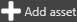
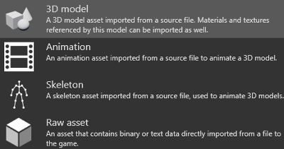
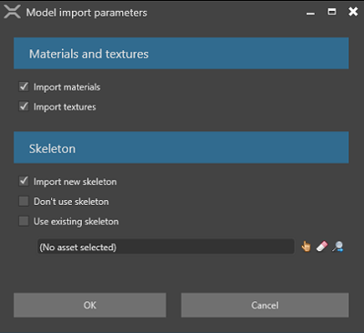

Import animations
Beginner Designer
To animate a model, you need to use three kinds of assets together:
- models
- skeletons
- animations
Stride supports the following model file types: .3ds, .blend, .dae,dxf, .fbx, .glb, .gltf, .md2, .md3, .obj, .ply, .stl,.stp, .x.
Import a model, skeleton, or animation from a model file
Drag the model file from Explorer to the Asset View (in the bottom pane by default).

Alternatively, in the Asset View:
1a. Click  and select Import directly from files.
2b. Browse to the file and click Open.
Specify whether you want to import the 3D model, animation, or skeleton from the model file.

- If you choose 3D model, Stride can import any additional materials, textures and skeletons it finds in the model file. You can also import the skeleton from the model (Import new skeleton), import no skeleton (Don't use skeleton), or specify a different skeleton (Use existing skeleton) in the lower field.

If you choose Skeleton, Stride imports only the skeleton from the model file. You might want to do this, for example, if you want to use it for a new skeleton that uses a subset of its nodes.
If you choose Animation, Stride imports only the animation from the model file. This is sufficient for regular animations; for additive information, there are some extra steps. For details, see Additive animation.
After you import the assets, Game Studio adds them to the Asset View.

You can view and edit their properties in the Property Grid (on the right by default). For more information, see Animation properties.
Use an animation asset
To use an animation asset, add an AnimationComponent to an entity, then add the animation asset to the animation component. For more information, see Set up animations.
Note
Make sure you correctly skin your mesh to the skeleton. If you don't, you won't be able to animate your model correctly.